Inhalt Index DeskTop Bronstein

 Funktionalanalysis Normierte Räume Geordnete normierte Räume
Funktionalanalysis Normierte Räume Geordnete normierte Räume


Sei  ein reeller normierter Raum mit der Norm 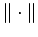. Ein Kegel 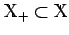 heißt solid, wenn 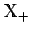 eine Kugel (mit positivem Radius) enthält. Die üblichen Kegel in den Räumen 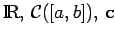 sind solid, die in den Räumen Lp([a,b]) und 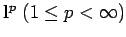 nicht.
ein reeller normierter Raum mit der Norm 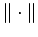. Ein Kegel 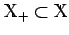 heißt solid, wenn 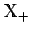 eine Kugel (mit positivem Radius) enthält. Die üblichen Kegel in den Räumen 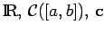 sind solid, die in den Räumen Lp([a,b]) und 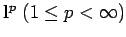 nicht.
Ein Kegel heißt normal, wenn die Norm in  semimonoton ist, d.h., es existiert eine Konstante 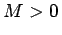, so daß
semimonoton ist, d.h., es existiert eine Konstante 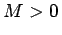, so daß
| 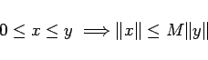 | (12.92) |
gilt. Ist  ein mit Hilfe eines Kegels geordneter BANACH-Raum, dann ist jedes (o)-Intervall genau dann normbeschränkt, wenn der Kegel normal ist. Die Kegel der Vektoren mit nichtnegativen Komponenten und der nichtnegativen Funktionen in den Räumen 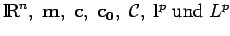 sind normal.
ein mit Hilfe eines Kegels geordneter BANACH-Raum, dann ist jedes (o)-Intervall genau dann normbeschränkt, wenn der Kegel normal ist. Die Kegel der Vektoren mit nichtnegativen Komponenten und der nichtnegativen Funktionen in den Räumen 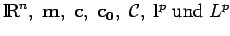 sind normal.
Ein Kegel heißt regulär, wenn jede monoton wachsende, von oben beschränkte Folge
eine CAUCHY-Folge in  ist. In einem BANACH-Raum ist jeder abgeschlossene reguläre Kegel normal. Die Kegel in 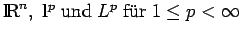 sind regulär, die in 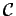 und 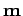 nicht.
ist. In einem BANACH-Raum ist jeder abgeschlossene reguläre Kegel normal. Die Kegel in 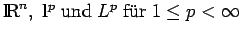 sind regulär, die in 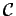 und 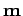 nicht.